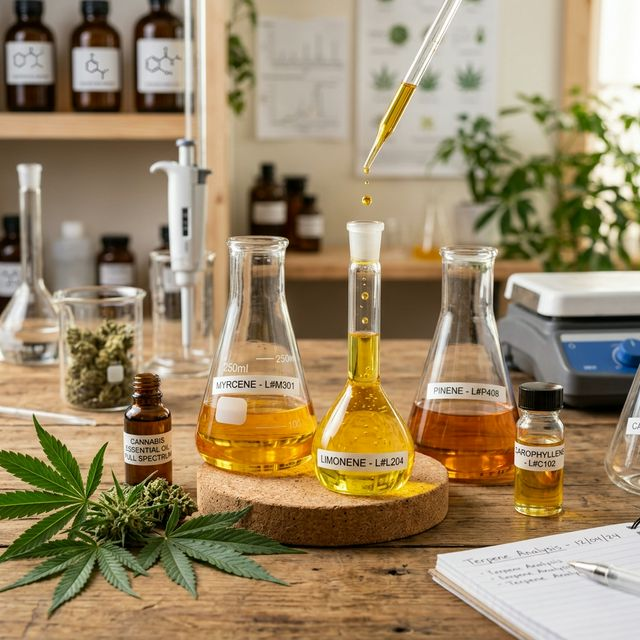

Canabinoides Menores: CBG, CBN e CBC — Os Coadjuvantes Essenciais
Por décadas, o foco recaiu sobre THC e CBD. Mas são os canabinoides menores — presentes em frações milimétricas — que determinam a diferença entre um isolado e uma formulação de Espectro Completo verdadeiramente eficaz.

O genoma da Cannabis sativa é capaz de sintetizar mais de 140 fitocannabinoides identificados. Destes, o THC e o CBD representam tipicamente 80–95% do perfil canabinoide das flores processadas. O restante — chamados de canabinoides menores — é frequentemente descartado pelo mercado, mas é estudado com crescente interesse pela farmacologia clínica.
A tese central do Efeito Entourage (Russo, 2011) é que esses compostos menores não são passageiros: eles são moduladores ativos da atividade dos canabinoides maiores e possuem mecanismos de ação próprios e independentes.
Os Três Protagonistas Emergentes
Dentre os canabinoides menores com maior volume de evidência clínica e relevância terapêutica, destacam-se três:
CBG: A Molécula-Mãe
O Canabigerol tem um status único no metabolismo da planta: ele é o precursor biossintético de todos os outros canabinoides. O ácido canabigerólico (CBGA) é convertido enzimaticamente em THCA, CBDA ou CBCA antes de amadurecer. Por isso, plantas jovens têm naturalmente concentrações altas de CBG — que cai ao mínimo na planta adulta.
Aplicação Clínica do CBG
Estudos em modelos animais de Doença Inflamatória Intestinal (DII) demonstraram redução significativa de marcadores pró-inflamatórios (TNF-α, IL-1β) com CBG. Pesquisas em esclerose lateral amiotrófica (ELA) mostraram retardo na progressão motora. Para glaucoma, o mecanismo é direto: CBG reduz a produção de humor aquoso, diminuindo a pressão intraocular sem os efeitos cognitivos do THC.
CBN: O Guardião do Sono
O Canabinol é o único canabinoide que se forma predominantemente pela degradação oxidativa do THC. Isso significa que extratos mais antigos ou armazenados de forma inadequada terão concentrações maiores de CBN. Na clínica, isso é relevante: pacientes que reportam efeitos sedativos marcantes com extratos de origem desconhecida frequentemente usam produtos com alta presença de CBN.
Seu mecanismo de ação é complexo: age em receptores CB1 (com baixíssima afinidade comparada ao THC), em receptores TRPV2, e apresenta ação modulatória em canais de sódio — explicando parcialmente seus efeitos analgésicos.
CBN e Insônia: Uma Relação Dose-Dependente
Estudos de 2024 (Corroon et al.) indicam que o CBN isolado tem efeito sedativo modesto. O efeito dramático surge na sua combinação com CBD e Mirceno — terpeno abundante em cultivares tipo "Indica". A sinergismo nesses três compostos produz hipnose e indução ao sono mais eficaz que qualquer componente isolado, validando o Efeito Entourage para esta indicação.
CBC: O Estimulador de Neurônios
O Canabicrômeno é talvez o menos compreendido pelo público, mas o com maior potencial emergente em neurologia. Sua peculiaridade: ao contrário de praticamente todos os outros canabinoides, o CBC não interage com CB1 ou CB2. Seus alvos são os receptores TRPV1, TRPV4, TRPA1 e os receptores de anandamida (AEA) — uma via completamente distinta.
O dado mais impactante vem da neurociência: estudos in vitro mostraram que o CBC aumenta a viabilidade de células precursoras neurais — o processo de neurogênese adulta. Se confirmado em humanos, isso abre perspectivas inéditas para condições como depressão resistente e doenças neurodegenerativas.
A Sinergia que Torna o Espectro Completo Superior
Exemplo de Sinergia — Insônia severa
vs. CBD isolado (mesma dose) — resposta significativamente inferior em estudos clínicos.
Esta é a razão pela qual a comunidade médico-científica converge para a preferência por extratos de Espectro Completo (full spectrum) sobre isolados e broadspectrum em condições complexas: a remoção de qualquer componente da matriz fitoquímica representa uma perda terapêutica mensurável.
🌿 Aprofunde-se no Efeito Entourage
Baixe gratuitamente o e-book "O Efeito Entourage" — um guia completo sobre fitoquímica, canabinoides menores, terpenos e como escolher a formulação certa para cada condição.
Baixar E-book Grátis